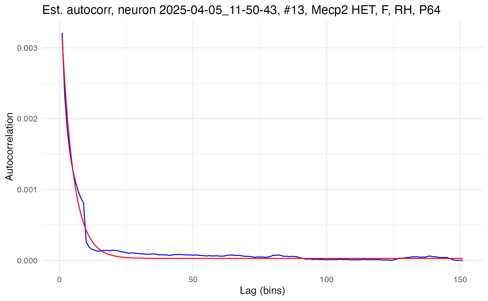

Estimating network time constants from KiloSort4 data
tutorial_tau_est_kilosort.RmdThe neurons package provides functions to use dichotomized Gaussians to estimate network time constants on different kinds of spike data, including KiloSort4 output. Kilosort4 is a Python package for extracting spike clusters (a proxy for individual neurons) from multi-channel probe recordings. Network time constants provide an estimate of recurrence by quantifying decay in spiking autocorrelation as a function of lag time. A higher network time constant indicates that a neuron receives a larger number of projections back on itself. Intuitively, the longer into the future a spike now increases the probability of a spike later, the stronger the connections from that neuron back onto itself must be.
Load data
Begin by clearing the R workspace, setting a random-number generator seed, and loading the neurons package.
# Clear the R workspace to start fresh
rm(list = ls())
# Set seed for reproducibility
set.seed(12345)
# Load neurons package
library(neurons) Spike and stimulus data
Provide the file path to the output from kilosort4. Recordings from the left and right hemisphere of various genotypes of mice are used for this tutortial. These recordings targeted the auditory cortex and were made while auditory stimuli were played at regular intervals.
# Set path to data
demo_data <- "/Users/michaelbarkasi/Library/CloudStorage/OneDrive-WashingtonUniversityinSt.Louis/projects_Oviedo_lab/_lateralized_recurrent_pathways/dichot-gaussian/data_demo"The function used to process kilosort4 output is preprocess.kilo4. This function expects its argument data_path to point to a folder the subfolders of which each contain a single kilosort4 output. This output should be in its own folder /kilosort4. The following four files are needed:
-
spike_positions.npy: 2D array giving the x and y
position of each spike
-
spike_clusters.npy: integer giving the cluster
number of each spike
-
spike_times.npy: sample number the spike occurred
at
- cluster_group.tsv or cluster_KSLabel.tsv or cluster_info.tsv: 2D array giving status of each cluster (0=noise, 1=MUA, 2=Good, 3=unsorted)
In addition, a MATLAB file includeVector.mat specifying whether each cluster is stimulus-responisve (1) or not (0) should be included in the kilosort4 folder. Finally, along with the kilosort4 subfolder, there should be a file StimulusStamps.csv in each recording folder.

Folder structure necessary for preprocess.kilo4 function.
Covariate data
Metadata about the recordings is needed to supply covariates. For this tutorial, a csv file with that data is in the neurons package itself. It is loaded with the regular read.csv function in R.
# Load
kilo4_metadata <- read.csv(
system.file(
"extdata",
"meta_data_kilo4demo.csv",
package = "neurons"
)
)
# Preview
print(head(kilo4_metadata))## DAY Neuralynx_ID EXPER HEMISPHERE PROBE COORDINATES_SHANK_1 COORDINATES_SHANK_2 STRAIN AGE SEX DEPTH
## 1 2025-02-06 13-06-34 001-001 RH H10b 0,0 0,0 C57 P79 F 1156.0
## 2 2025-02-06 14-03-05 001-002 RH H10b 0,0 0,0 C57 P79 F 1209.0
## 3 2025-02-06 15-36-59 001-004 RH H10b 0,0 0,0 C57 P79 F 1003.0
## 4 2025-02-06 15-53-03 001-005 RH H10b 0,0 0,0 C57 P79 F 1003.0
## 5 2025-02-20 16-19-12 001-001 RH H10b 0,0 0,0 Mecp2 HET P79 F 1191.4
## 6 2025-02-20 17-04-02 001-002 RH H10b 0,0 0,0 Mecp2 HET P79 F 1191.4The neurons package (as of v1.0) can only handle certain covariates, and expects them to have specific names (type, genotype, sex, hemi, region, age). The package also expects the dataframe holding those covariates to have rows labeled with recording names that match the format of the recording names in the data.
# Format and apply recording names to metadata as row names
rownames(kilo4_metadata) <- paste0(
kilo4_metadata$DAY,
"_",
kilo4_metadata$Neuralynx_ID
)
# Keep only the relevant columns (covariates of interest)
kilo4_metadata <- kilo4_metadata[,c("HEMISPHERE","STRAIN","AGE","SEX")]
# Rename columns to match what's expected by neurons package
colnames(kilo4_metadata) <- c("hemi", "genotype", "age", "sex")
# Preview
print(head(kilo4_metadata))## hemi genotype age sex
## 2025-02-06_13-06-34 RH C57 P79 F
## 2025-02-06_14-03-05 RH C57 P79 F
## 2025-02-06_15-36-59 RH C57 P79 F
## 2025-02-06_15-53-03 RH C57 P79 F
## 2025-02-20_16-19-12 RH Mecp2 HET P79 F
## 2025-02-20_17-04-02 RH Mecp2 HET P79 FPreprocess data into spike rasters
The function preprocess.kilo4 converts cluster spike times into spike rasters of the standardized format expected by the neurons package.
Parsing trials and quality control
The output of kilosort4 must be partitioned into trials, which preprocess.kilo4 does with start and stop times relative to a stimulus specified in StimulusStamps.csv. For example, information about responses to stimuli can be analyzed by setting the start time to something negative (before the stimulus) and the end time to something positive (after the stimulus). However, for estimating autocorrelation, it’s the spontaneous activity during a period of silence after the stimulus which should be analyzed. In this case, the start time should be some time after the stimulus (to allow for settling) and the end time some time later.
spike.rasters.kilo4 <- preprocess.kilo4(
trial_time_start = 500, # ms
trial_time_end = 500 + 1520, # ms
recording.folder = demo_data,
meta_data = kilo4_metadata,
max_spikes = 1e4,
min_spikes = 1e2,
min_trials = 1e2,
pure_trials_only = TRUE,
good_cells_only = TRUE,
stim_responsive_only = TRUE,
verbose = FALSE
) A path (such as demo_data) for the actual data must be passed to preprocess.kilo4. Metadata (such as kilo4_metadata) will usually be provided, but is not necessary for the function to run. If left out, the preprocessed output will simply lack information about covariates.
In addition to the start and stop times and pointers to the data, preprocess.kilo4 has three Boolean variables controlling the quality of clusters extracted for further analysis:
- pure_trials_only: include only trials which do not overlap with other trials (i.e., do not have a start time before the end time of any previous trials)?
- good_cells_only: include only spike clusters which passed hand curation?
- stim_responsive_only: include only spike clusters which are responsive to stimuli?
Three additional numeric variables are also useful for quality control:
- max_spikes: maximum number of spikes a cluster can have to be extracted
- min_spikes: minimum number of spikes a cluster must have to be extracted
- min_trials: minimum number of trials a cluster must have to be extracted
Finally, if verbose is set to TRUE, the function will print out information about the files it is finding and parsing.
Raster format
The output of preprocess.kilo4, in this case spike.rasters.kilo4, is a list with three elements: spikes, timeXtrial, and cluster.key. The first element, spikes, is a dataframe giving a sparse representation of the spike rasters from each recording. Each row is a spike, with columns giving information such as cell number, time, and genotype.
## trial sample cell time_in_ms recording_name cluster hemi genotype age sex
## 3767 1 6881.530 1 503.2369 2025-04-05_11-50-43 17 RH Mecp2 HET P64 F
## 3768 1 6884.632 2 506.3389 2025-04-05_11-50-43 34 RH Mecp2 HET P64 F
## 3770 1 6888.790 3 510.4969 2025-04-05_11-50-43 82 RH Mecp2 HET P64 F
## 3772 1 6892.552 4 514.2589 2025-04-05_11-50-43 1 RH Mecp2 HET P64 F
## 3781 1 6903.673 5 525.3799 2025-04-05_11-50-43 12 RH Mecp2 HET P64 F
## 3783 1 6906.115 2 527.8219 2025-04-05_11-50-43 34 RH Mecp2 HET P64 FThe second element, timeXtrial, is a list of matrices, one per cell, with rows corresponding to time bins and columns to trials. Each entry is a binary indicator of whether the cell fired in that time bin during that trial. Thus, timeXtrial contains the rasters of spikes in a traditional format.
The third element, cluster.key, is a dataframe with rows representing clusters (i.e., “cells”) and columns giving information such as cell number, genotype, and number of spikes.
## recording.name cell cluster num.of.spikes num.of.responsive.trials hemi genotype age sex
## 1 2025-04-05_11-50-43 1 17 1869 337 RH Mecp2 HET P64 F
## 2 2025-04-05_11-50-43 2 34 1457 271 RH Mecp2 HET P64 F
## 3 2025-04-05_11-50-43 3 82 2321 325 RH Mecp2 HET P64 F
## 4 2025-04-05_11-50-43 4 1 2461 396 RH Mecp2 HET P64 F
## 5 2025-04-05_11-50-43 5 12 4153 355 RH Mecp2 HET P64 F
## 6 2025-04-05_11-50-43 6 95 2263 360 RH Mecp2 HET P64 FCluster summary
Important summary information can be pulled from cluster.key. For example, how many cells were included in the output?
## Number of cells included: 37The number of cells and summary statistics, such as mean spike and trial count, can be pulled for each covariate combination as well:
# Get all combinations of covariates
covariate_combos <- expand.grid(
genotype = unique(spike.rasters.kilo4$cluster.key$genotype),
hemi = unique(spike.rasters.kilo4$cluster.key$hemi),
sex = unique(spike.rasters.kilo4$cluster.key$sex)
)
# Initialize variables to hold summary stats
n_cells <- rep(NA, nrow(covariate_combos))
mean_spikes <- rep(NA, nrow(covariate_combos))
mean_trials <- rep(NA, nrow(covariate_combos))
# Loop through combinations and get summary stats
for (cv in 1:nrow(covariate_combos)) {
# Get combination of covariates
combo <- covariate_combos[cv, ]
# Subset cluster.key for this combination
subset_key <- spike.rasters.kilo4$cluster.key[
spike.rasters.kilo4$cluster.key$genotype == combo$genotype &
spike.rasters.kilo4$cluster.key$hemi == combo$hemi &
spike.rasters.kilo4$cluster.key$sex == combo$sex,
]
# If any cells in this combination, compute and save stats
if (nrow(subset_key) > 0) {
n_cells[cv] <- nrow(subset_key)
mean_spikes[cv] <- round(mean(subset_key$num.of.spikes),1)
mean_trials[cv] <- round(mean(subset_key$num.of.responsive.trials),1)
}
}
# Print results
print(data.frame(covariate_combos, n_cells, mean_spikes, mean_trials))## genotype hemi sex n_cells mean_spikes mean_trials
## 1 Mecp2 HET RH F 26 1946.9 324.2
## 2 Shank3 KO RH F NA NA NA
## 3 C57 RH F NA NA NA
## 4 Mecp2 HET LH F NA NA NA
## 5 Shank3 KO LH F 1 1334.0 297.0
## 6 C57 LH F 1 2587.0 449.0
## 7 Mecp2 HET RH M NA NA NA
## 8 Shank3 KO RH M NA NA NA
## 9 C57 RH M NA NA NA
## 10 Mecp2 HET LH M NA NA NA
## 11 Shank3 KO LH M 9 728.0 173.0
## 12 C57 LH M NA NA NAThus, for Mecp2 HET mice, 26 clusters from the right hemisphere of females passed the quality control, with none from males or the left hemisphere. For Shank3 KO mice, 9 clusters passed from the left hemisphere of males and 1 from the left hemisphere of females, with none from the right hemisphere. For C57 (wild-type) mice, 1 cluster passed from the left hemisphere of females, with none from males or the right hemisphere.
Estimate autocorrelation parameters
With the kilosort4 data preprocessed into spike rasters, the next step is to use the function load.rasters.as.neurons to convert these rasters into a special class of object from the neuron package, neuron.
neurons.kilo4 <- load.rasters.as.neurons(
spike.rasters.kilo4$spikes,
sample_rt = 1e3
)Class neuron comes with built-in methods for plotting rasters, plotting autocorrelation, and estimating autocorrelation parameters with dichotomized Gaussian simulations.
Visualizing autocorrelation
For example, here is the raster from one cell:
example_cell_high_autocor <- 25
example_raster_high_autocor <- plot.raster(neurons.kilo4[[example_cell_high_autocor]])
print(example_raster_high_autocor)
This cell exhibits high autocorrelation, as can be seen by the long horizontal bursts or “streaks” of spikes. Contrast this raster with one from a cell with low autocorrelation:
example_cell_low_autocor <- 17
example_raster_low_autocor <- plot.raster(neurons.kilo4[[example_cell_low_autocor]])
print(example_raster_low_autocor)
Notice how the raster for this cell shows more randomly scattered spikes, with fewer (almost no) long streaks. The “streaks” absent here, but present in the previous raster, are a manifestation of autocorrelation, i.e., the tendency of a spike now to increase the probability of a spike later.
Quantifying autocorrelation
Beyond visualizing it as streaks in a raster, autocorrelation can be quantified both by computing the correlation between spikes separated by different lag times, and by fitting an exponential decay model to those spike correlations. Methods for class neuron can be used to compute autocorrelation and fit the exponential decay model. Here, for example, these methods are used to quantify autocorrelation for the high and low-autocorrelation example cells above:
# Compute autocorrelation for example cell, high autocorrelation
neurons.kilo4[[example_cell_high_autocor]]$compute_autocorrelation("sum")
# Fit exponential decay model to autocorrelation to estimate the network time constant (tau)
neurons.kilo4[[example_cell_high_autocor]]$set_edf_initials(0.001, 1.0)
neurons.kilo4[[example_cell_high_autocor]]$set_edf_termination(1e-8, 1000)
neurons.kilo4[[example_cell_high_autocor]]$fit_autocorrelation()
# Compute autocorrelation for example cell, low autocorrelation
neurons.kilo4[[example_cell_low_autocor]]$compute_autocorrelation("sum")
# Fit exponential decay model to autocorrelation to estimate the network time constant (tau)
neurons.kilo4[[example_cell_low_autocor]]$set_edf_initials(0.001, 1.0)
neurons.kilo4[[example_cell_low_autocor]]$set_edf_termination(1e-8, 1000)
neurons.kilo4[[example_cell_low_autocor]]$fit_autocorrelation()The results can be visualized by plotting both the computed autocorrelation and fitted exponential decay in autocorrelation. Here is the high-autocorrelation cell:
# Plot computed autocorrelation and fitted exponential decay
example_autocor_high_autocor <- plot.autocorrelation(neurons.kilo4[[example_cell_high_autocor]])
print(example_autocor_high_autocor)
Here is the plot for the low-autocorrelation cell:
# Plot computed autocorrelation and fitted exponential decay
example_autocor_low_autocor <- plot.autocorrelation(neurons.kilo4[[example_cell_low_autocor]])
print(example_autocor_low_autocor)
The parameters of the exponential decay fit provide succinct quantification of the autocorrelation.
# Fetch and print estimated exponential decay parameters
print(neurons.kilo4[[example_cell_high_autocor]]$fetch_EDF_parameters())## A tau bias_term
## 6.805267e-02 1.286405e+02 4.928898e-03
# Fetch and print estimated exponential decay parameters
print(neurons.kilo4[[example_cell_low_autocor]]$fetch_EDF_parameters())## A tau bias_term
## 1.746771e-03 1.999999e+01 1.083694e-04The amplitude, A, gives the autocorrelation at lag time 1 (minus the bias), while the time constant, τ (tau), gives the rate of decay in autocorrelation as lag time increases. Notice how the high-autocorrelation cell has a time constant of 131ms and an amplitude of 0.052, while the low-autocorrelation cell has a time constant of only 20ms and an amplitude of 0.0015.
In practice, the individual steps shown above do not need to be run with separate methods calls. The neurons package provides a function, process.autocorr, which does all of these steps in one call for a list of neurons.
autocor.results.batch <- process.autocorr(neurons.kilo4)
print(head(autocor.results.batch))## cell lambda_ms lambda_bin A tau bias_term autocorr1 max_autocorr mean_autocorr min_autocorr
## 1 neuron_1 0.002458518 0.04917037 0.009997882 174.7406 0.002417725 0.012415607 0.011334353 0.003516828 0.002419595
## 2 neuron_2 0.001918199 0.03836398 0.004511493 922.3873 0.001471795 0.005983288 0.005886519 0.003676336 0.002359082
## 3 neuron_3 0.003054323 0.06108645 0.018586266 196.5760 0.003731555 0.022317820 0.020519836 0.006044366 0.003740575
## 4 neuron_4 0.003245878 0.06491756 0.012340709 235.3328 0.004214290 0.016554999 0.015549541 0.006066136 0.004235336
## 5 neuron_5 0.005471888 0.10943775 0.052871964 146.0485 0.011976621 0.064848585 0.058082129 0.016779932 0.011978453
## 6 neuron_6 0.002979021 0.05958043 0.012647728 167.1534 0.003549827 0.016197555 0.014771276 0.004876429 0.003551430Estimating parameters with dichotomized Gaussian simulations
# ... set number of sims to run per neuron
n_sims <- 100
# ... set number of trials to simulate per neuron
n_trials <- 500
# ... run estimates on data
autocor.ests.kilo4 <- estimate.autocorr.params(
neuron_list = neurons.kilo4,
n_trials_per_sim = n_trials,
n_sims_per_neurons = n_sims,
bin_count_action = "sum",
A0 = 0.001,
tau0 = 1.0,
ctol = 1e-8,
max_evals = 500,
verbose = FALSE
)Run analysis:
autocorr_results <- analyze.autocorr(
autocor.ests.kilo4,
covariate = c("hemi","genotype"),
n_bs = 1e4
)
df <- data.frame(
value = unlist(autocorr_results, use.names = FALSE),
group = rep(names(autocorr_results), each = nrow(autocorr_results))
)
# Plot
title_size <- 20
axis_size <- 12
legend_size <- 10
example_stats1 <- ggplot2::ggplot(df, ggplot2::aes(x = value, fill = group)) +
ggplot2::geom_density(alpha = 0.6) +
#scale_y_continuous(transform = "log1p") +
ggplot2::labs(title = "Expected Time Constant", x = "ms", y = "Density") +
ggplot2::theme_minimal() +
ggplot2::theme(
plot.title = ggplot2::element_text(hjust = 0.5, size = title_size),
axis.title = ggplot2::element_text(size = axis_size),
axis.text = ggplot2::element_text(size = axis_size),
legend.title = ggplot2::element_text(size = legend_size),
legend.text = ggplot2::element_text(size = legend_size),
legend.position = "bottom"
) + ggplot2::theme(
panel.background = ggplot2::element_rect(fill = "white", colour = NA),
plot.background = ggplot2::element_rect(fill = "white", colour = NA)
)
print(example_stats1)